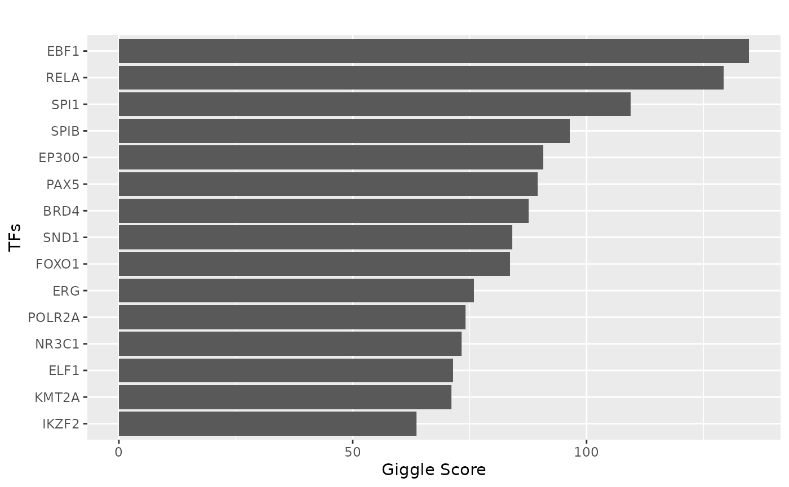

Analyze a single sample
sample_example.RmdWe explored the regulation of the CD79B gene in a single peripheral blood mononuclear cell (PBMC) sample. CD79B is crucial for forming the B-cell receptor complex and is expressed almost exclusively on B cells.
library(CompassR)
library(Seurat)
#> Loading required package: SeuratObject
#> Loading required package: sp
#> 'SeuratObject' was built under R 4.4.0 but the current version is
#> 4.4.2; it is recomended that you reinstall 'SeuratObject' as the ABI
#> for R may have changed
#>
#> Attaching package: 'SeuratObject'
#> The following objects are masked from 'package:base':
#>
#> intersect, t
library(Signac)
### Adjust the timeout to 10 minutes due to file size
options(timeout=600)Load the Seurat object and update the path to the fragments file online.
### Sample level analysis
obj = readRDS(url("https://g-297ec7.1d0d8d.03c0.data.globus.org/seurat_object/GSM5065525_GSM5065524.rds", "rb"))
DefaultAssay(obj) = "ATAC"
frag = Fragments(obj)[[1]]
frag = UpdatePath(frag, new.path = "https://g-297ec7.1d0d8d.03c0.data.globus.org/fragments/GSM5065525_GSM5065524.tsv.gz", verbose = TRUE)
#> Warning in UpdatePath(frag, new.path =
#> "https://g-297ec7.1d0d8d.03c0.data.globus.org/fragments/GSM5065525_GSM5065524.tsv.gz",
#> : Replacing local file path with a remote file
#> Fragment file is on a remote server
obj@assays$ATAC@fragments[[1]] = fragGet the coverage plot for the gene of interest.
gene = "CD79B"
p = CoveragePlot(
object = obj,
group.by = "annot.primary",
region = gene,
features = gene,
annotation = TRUE,
peaks = TRUE,
extend.upstream = 10000,
extend.downstream = 10000
)
#> Warning in LinkPlot(object = object[[assay[[1]]]], region = region): Please
#> install ggforce to enable LinkPlot plotting: install.packages('ggforce')
print(p)
#> Warning: Removed 107 rows containing missing values or values outside the scale range
#> (`geom_segment()`).Extract the links for the gene of interest and plot the TF binding sites.
link_df_obj = Links(obj)
gene_link = link_df_obj[link_df_obj$gene == "CD79B"]
peak_vec = sub(":", "-", gene_link$peak)
peak_vec
#> [1] "chr17-63646165-63646696" "chr17-63920755-63921053"
#> [3] "chr17-63922401-63922736" "chr17-63925470-63925926"
#> [5] "chr17-63931066-63932640" "chr17-63945653-63947027"
#> [7] "chr17-64411645-64412612"
tf = tf_binding("hg38", paste0(peak_vec, collapse = "_"))
p = plot_giggle(tf)
print(p)